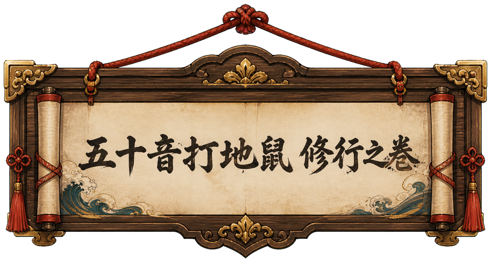
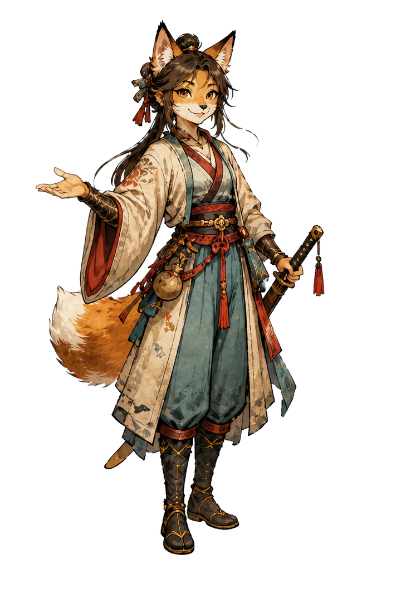
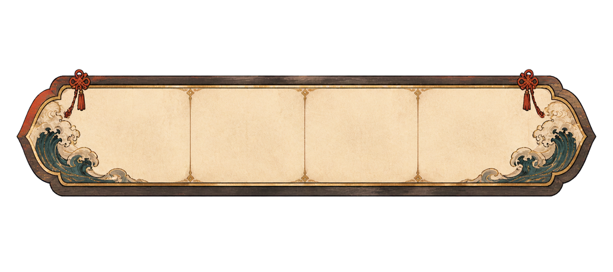

修行前必讀
平假名打地鼠玩法
如何出招
看卷軸上的羅馬拼音，在 7 秒內點擊相對應的平假名。干擾角色出現時，先忍住別打！
得分與連擊
答對得 10 分，再依反應速度與連擊追加獎勵。答錯或超時扣 5 分，連擊歸零。
五顆生命
打錯或每題 7 秒超時都會失去一顆心。生命歸零，修行立即結束。

假名修行場 · ま～ん篇
聽準音、看清字，以指尖擊中正確的平假名！

修行前必讀
看卷軸上的羅馬拼音，在 7 秒內點擊相對應的平假名。干擾角色出現時，先忍住別打！
答對得 10 分，再依反應速度與連擊追加獎勵。答錯或超時扣 5 分，連擊歸零。
打錯或每題 7 秒超時都會失去一顆心。生命歸零，修行立即結束。

修行成果
| 假名 | 拼音 | 出現 | 正確 | 錯誤 | 平均反應 |
|---|